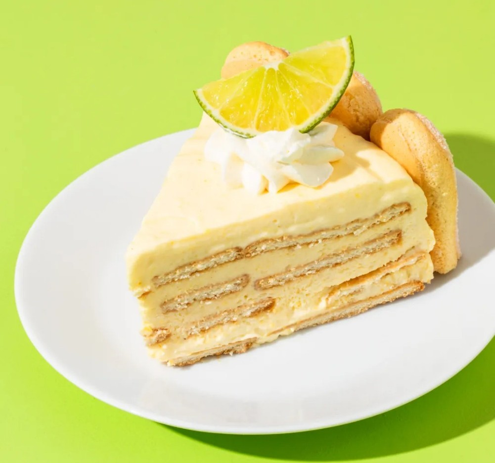
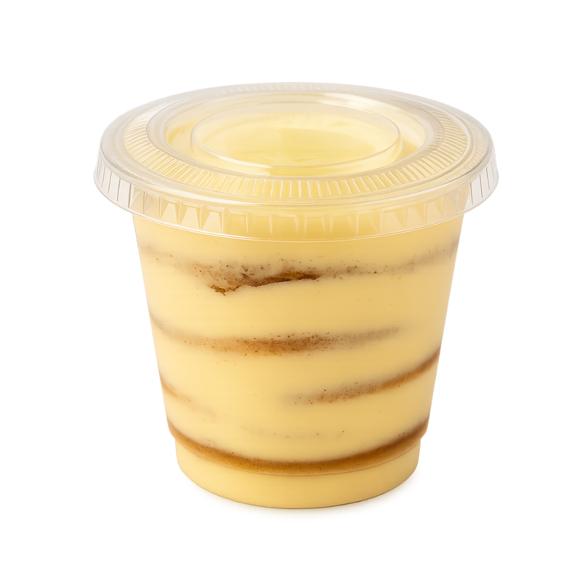
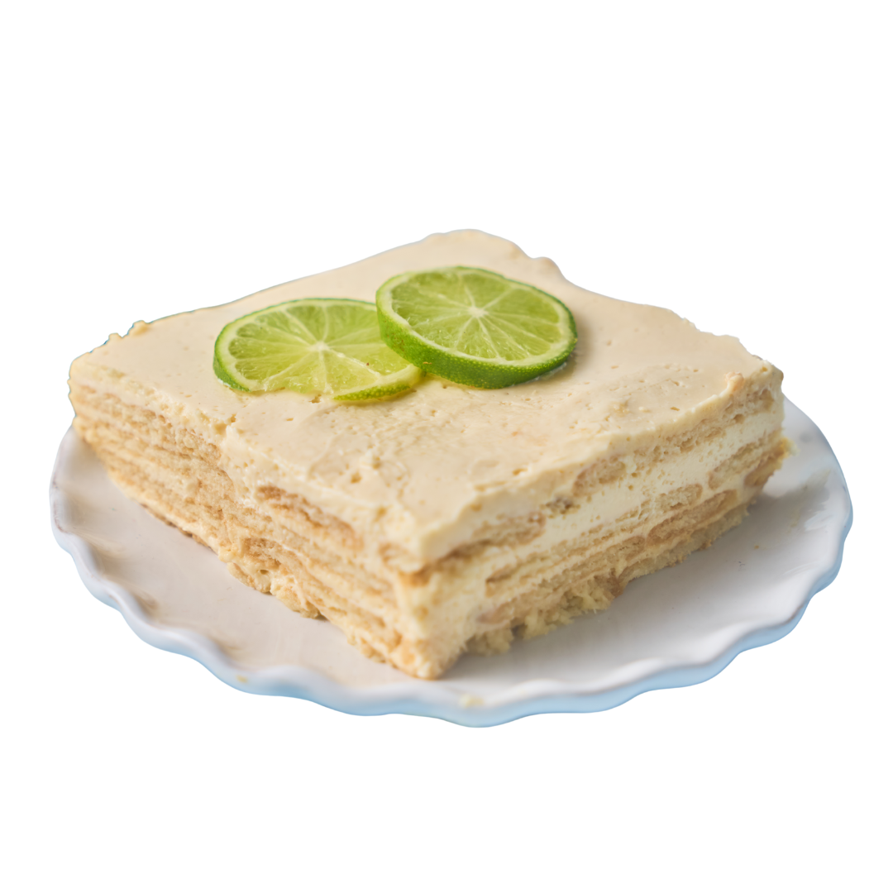
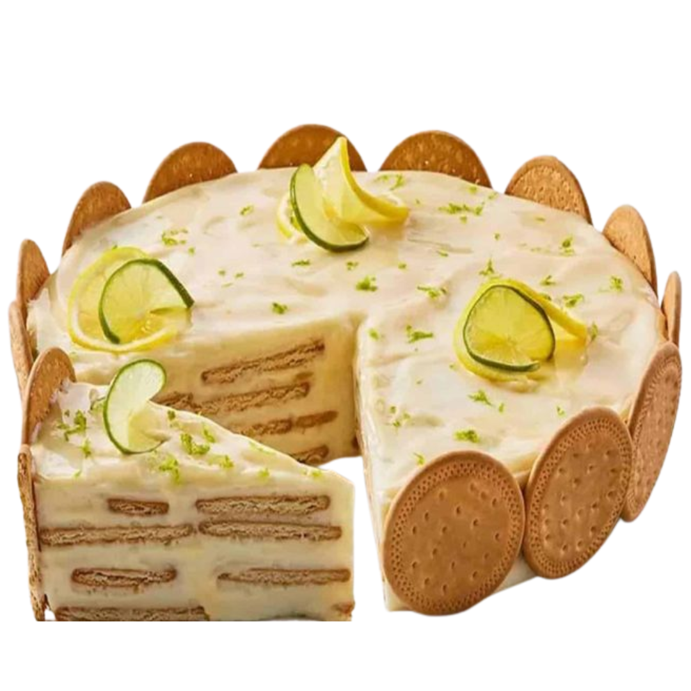

Nuestra Historia
Somos una repostería artesanal dedicada exclusivamente a crear carlotas de limón irresistibles. Nuestra pasión nace del deseo de compartir el sabor casero de las carlotas que todos amamos, con un toque fresco y moderno.

Misión
Endulzar los momentos más especiales de nuestros clientes con carlotas de limón elaboradas con ingredientes frescos, calidad artesanal y mucho amor.
Visión
Convertirnos en el referente número uno de carlotas en nuestra ciudad, expandiendo nuestra pasión a nuevos sabores y experiencias.
Lo que nos hace únicos
- ⭐ Pasión por el sabor
- ⭐ Ingredientes frescos y naturales
- ⭐ Atención personalizada
- ⭐ Presentaciones perfectas para regalar
Nuestro trabajo


